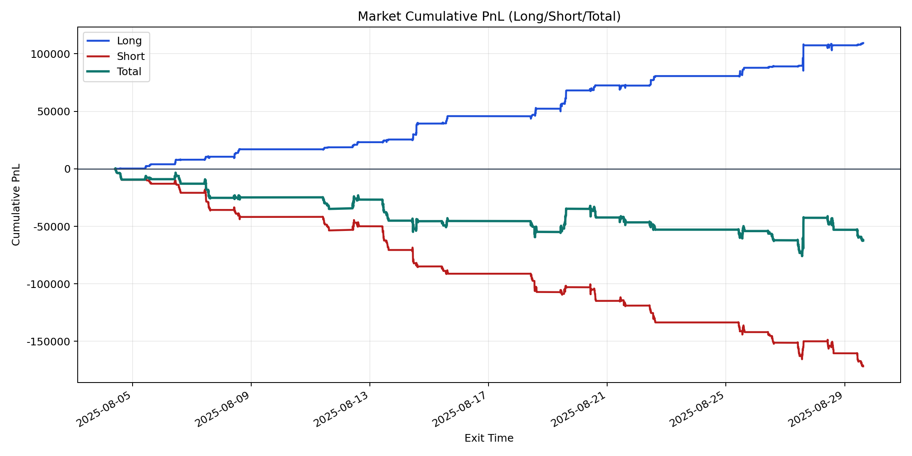
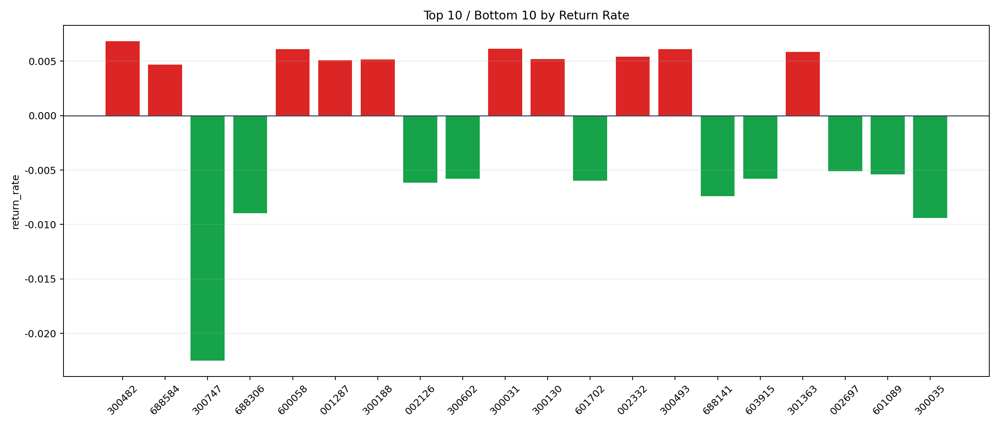

| repo_root | /home/haoranyou/data/output/alpha0.4_1w_5s_3ticks_index_filter/index_weights_1000 |
|---|---|
| period_months | 1 |
| period_label | 2025-08-04_to_2025-08-29 |
| start_time | 2025-08-04 09:50:17 |
| end_time | 2025-08-29 14:59:55 |
| n_trades | 32648 |
| n_symbols | 327 |
| total_pnl | -62292.03600000007 |
| long_total_pnl | 109378.77644999986 |
| short_total_pnl | -171670.81244999994 |
| total_entry_notional | 306457270.0 |
| long_entry_notional | 65748587.0 |
| short_entry_notional | 240708683.0 |
| total_return_rate | -0.00020326499678079125 |
| long_return_rate | 0.0016635912867602745 |
| short_return_rate | -0.0007131891143702529 |
| top_symbols_by_return | ["300482", "300031", "300493", "600058", "301363", "002332", "300130", "300188", "001287", "688584"] |
| bottom_symbols_by_return | ["300747", "300035", "688306", "688141", "002126", "601702", "603915", "300602", "601089", "002697"] |

